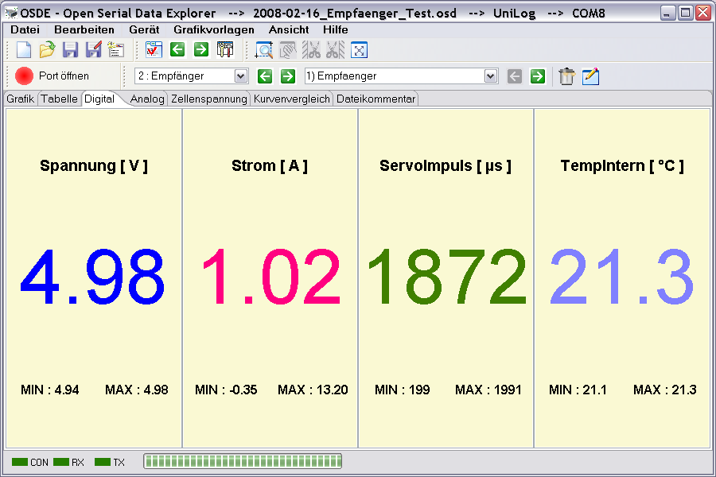

Das Digitalfenster ist dafür gedacht aktuelle Werte in Zahlenform, die im Moment aufgenommen wurden anzuzeigen. Wenn, zum Beispiel, ein Ladegerät alle 10 Sekunden eine Messung vornimmt wird der daraus resultierende Messwert numerisch angezeigt. Die Farbe der numerischen Hauptdarstellung entspricht der eingestellten Kurvenfarbe.

Wie schon erwähnt werden hierfür keine Berechnungen vorgenommen, sondern nur die Werte, mit der über das Kurvenselektor-Kontextmenü eingestellten Genauigkeit (Achsen-Zahlenformat) entsprechend, angezeigt.
Hinweis : Es werden alle aktiven und sichtbaren Messwerte, ausgewählt über den Kurvenselektor, mit konfigurierter Nachkommastelle dargestellt.